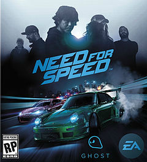
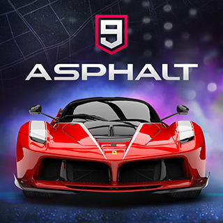
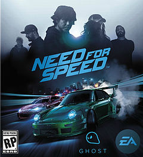
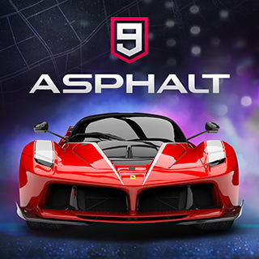
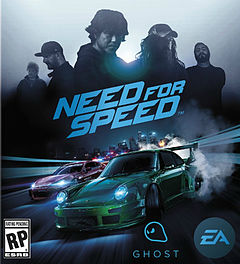
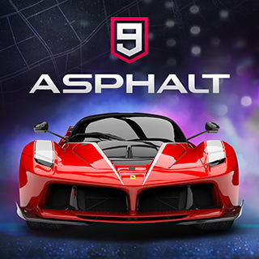

Um jogo eletrônico de corrida é um gênero de jogos eletrônicos em que o jogador participa de competições de corrida com qualquer tipo de veículo terrestre, inclusive motocicletas e quadriciclos. Existem alternativas de jogos com veículos aquáticos, aéreos e até espaciais. Jogos de corrida utilizam a perspectiva de jogo em primeira ou terceira pessoa. Podem ser baseados tanto em competições ou lugares reais quanto em ambientes fictícios, variando entre jogabilidade de simuladores, ou jogos mais arcades.

